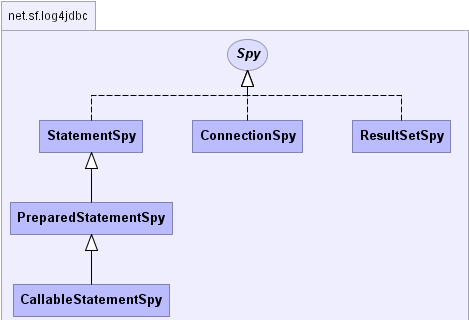
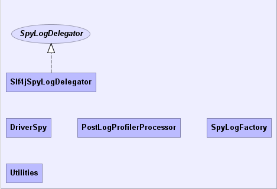

|
log4jdbc3 1.2beta2 | |||||||||
| PREV PACKAGE NEXT PACKAGE | FRAMES NO FRAMES | |||||||||
See:
Description
| Interface Summary | |
| Spy | Common interface that all Spy classes can implement. |
| SpyLogDelegator | Delegates Spy events to a logger. |
| Class Summary | |
| CallableStatementSpy | Wraps a CallableStatement and reports method calls, returns and exceptions. |
| ConnectionSpy | Wraps a JDBC Connection and reports method calls, returns and exceptions. |
| DriverSpy | A JDBC driver which is a facade that delegates to one or more real underlying JDBC drivers. |
| PostLogProfilerProcessor | Post processes an existing sqltiming log, and creates a profiling report from it. |
| PreparedStatementSpy | Wraps a PreparedStatement and reports method calls, returns and exceptions. |
| ResultSetSpy | Wraps a ResultSet and reports method calls, returns and exceptions. |
| Slf4jSpyLogDelegator | Delegates JDBC spy logging events to the the Simple Logging Facade for Java (slf4j). |
| SpyLogFactory | A provider for a SpyLogDelegator. |
| StatementSpy | Wraps a Statement and reports method calls, returns and exceptions. |
| Utilities | Static utility methods for use throughout the project. |
log4jdbc is a Java JDBC driver that can log SQL and/or JDBC calls (and optionally SQL timing information) for other JDBC drivers using the Simple Logging Facade For Java (SLF4J) logging system.
This is Open Source software: Copyright © 2007-2008 Arthur Blake Licensed under the Apache License, Version 2.0 (the "License"); you may not use this log4jdbc except in compliance with the License. You may obtain a copy of the License at http://www.apache.org/licenses/LICENSE-2.0 Unless required by applicable law or agreed to in writing, software distributed under the License is distributed on an "AS IS" BASIS, WITHOUT WARRANTIES OR CONDITIONS OF ANY KIND, either express or implied. See the License for the specific language governing permissions and limitations under the License.
|  |
|  |
|
log4jdbc3 1.2beta2 | |||||||||
| PREV PACKAGE NEXT PACKAGE | FRAMES NO FRAMES | |||||||||